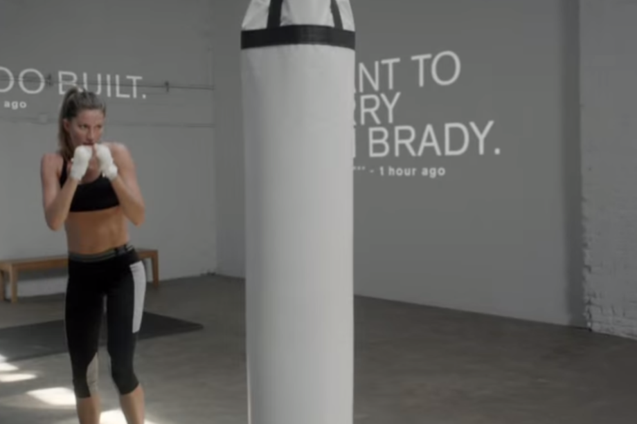

Na campanha de lançamento do 3D White, Ana bella faz um singelo striptease. O comercial foi sucesso de views e rendeu um leilão beneficente do vestido usado pela modelo.

Para promover a nova linha de verão da H&M, Ana bella arri scou-se em um campo desconhecido: a música. Na campanha, a modelo canta um clássico dos anos 70 usando roupas de praia da marca. A voz da loira não agradou muitos ouvidos e o vídeo foi criticado por muitos:
Considerado um dos melhores comerciais de sua carreira, o vídeo apresenta uma Ana pouco conhecida pela mídia. No filme, a brasileira aparece esmurrando um saco de areia enquanto comentários sobre ela são projetados na parede. O comercial faz uma referência a enxurrada de críticas geradas na internet após o anúncio da parceria entre marca e modelo: